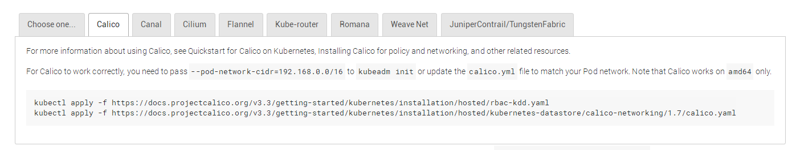

用kubeadm自动化安装k8s-HA_1.13.0
缕一缕K8S-1.13.0-HA的官方安装说明
图片资料来源于官方网站
1.改进
-
新版本对安装进行了改进
可以使用kubeadm join来加入其它master结点，并承诺将来的安装会更快速简便 -
对HA集群的改进
高可用集群在1.12版是不推荐的alpha版，1.13.0已移除，变为了v1beta1
2.各版本提供支持的时间段
1.13.X到2019年9月
3.两种HA拓扑结构
-
内建etcd集群的架构-stacked etcd

-
外部etcd集群的架构-external etcd
##### （我选后一种，需要先配好Haproxy+Keepalived+etcd的集群三件套）

4.各结点上应用组件占用的端口
5.支持的各种虚拟网络，以及Calico网络的的配置方法

6.使用CoreOS（即Container Linux）时，安装CNI、CRI、kubeadm/kubectl/kubelet的方法，也可以用在其它LINUX上
7.从集群移除结点时

安装
1.几种自动化安装脚本
-
K8S中文社区推荐的安装脚本，用的人很多
-
叫cookcode的大牛写的，只到1.11版，没更新
-
我写的自动安装脚本，用在CoreOS上，欢迎使用 （也能用在Centos7上，不过要做适用性配置）
2.安装时下不到镜相怎么办？
-
just try: docker pull registry.cn-hangzhou.aliyuncs.com/google_containers/<镜相名>
-
gcr.io_mirror
-
某大牛的自动下载SHELL
-
科学上网
-
使用公有云镜相海外构建，可以百度一下方法
-
参考上面自动化安装给出的离线镜相包
3.遇到问题怎么解决？
-
关注这个issues,有很多问题及解决办法
-
官方的常用问题
-
官方的issues(2000+，太多了，不敢watch)

kubernetes的主要特点
-
服务发现与负载均衡
-
支持各种后端存储架构编排
-
自动化的滚动更新与回滚
-
批量执行
-
自动化装箱，即按需分配容器到结点
-
自愈，当结点故障或由用户定义的健康检查失败时，自动重启、替换和重新调度容器，直至恢复健康状态
-
密钥认证与设置管理
-
水平伸缩
相关链接
我的自动安装脚本说明
前言：
本节介绍k8s高可用集群的自动化安装
版本：
-
k8s 1.12.1、1.13.0
-
coreOS1855
最新安装说明见：README: https://github.com/Thomas-YangHT/k8s-ha-autoinstall/blob/master/README.md
准备工作：
完成前篇《基础架构八：coreOS的安装》
相关代码与资源：
- 安装脚本
git clone https://github.com/Thomas-YangHT/k8s-ha-autoinstall.git
- 下载需要的镜相，百度网盘 ：
* coreos-k8s.tgz https://pan.baidu.com/s/1KT6ZzDic3sAfaY0QlQZbTw
* ha.tgz https://pan.baidu.com/s/1Cj_BAiohKnZOi2MKCEX10g
* coreosbase2.tgz https://pan.baidu.com/s/141I6ctxuGtFfiD8tRHfz_g
HA基本结构：
3主多从, 坏任一台不影响集群工作
前端：keepalived’s VIP+haproxy’s 8443 to real IP’s 6443
3Master组成控制平台，再增加任意个工作结点
可参考上节external_etcd图例

01 文件说明
-
CONFIG —-安装配置文件
-
install.sh —-安装执行脚本
-
fab_inst.py —-fabric执行程序，由install.sh调用
-
coreos-tgz —-k8s1.12.1所需基础镜相与配置
-
ha.tgz —-keepalived/haproxy/etcd三个集群安装基础镜相
-
coreosbase2 —-CoreOS 1855.4版本KVM基础镜相 20G硬盘；
-
其它文件说明见README.md
02 安装步骤
一.下载好相关文件放于同一目录
见（相关代码与资源）
##### 二.调整好KVM虚拟机并clone三主一从（可多从）；

##### 三.修改CONFIG配置文件相关IP与主机名； 三主一从的配置示例 ：
-
红色部分是三主一从及VIP等配置，需要根据实际情况修改
-
绿色部分用于clone虚拟机脚本自动配置

##### 四.执行安装: sh -x install.sh allha

03 验证安装
安装完毕会显示dashboard 的nodeport端口与登陆token
使用firefox 登录dashboard：（任一结点IP的nodeport端口）

脚本相关步骤分解说明：
keepalived
docker run脚本： docker-keepalived.sh 由fab-inst.py安装时调用在每台服务器上运行
haproxy
haproxy.cfg ：由haproxy_conf.sh根据CONFIG自动生成，不必理睬
docker run脚本： docker-haproxy.sh 由fab-inst.py安装时调用在每台服务器上运行
etcd
SSL证书生成脚本：etcdssl.sh生成证书放于SSL目录，自动调用不必理睬
docker run脚本：docker-etcd.sh 由fab-inst.py安装时调用在每台服务器上运行
配置参考：https://kubernetes.io/docs/setup/independent/setup-ha-etcd-with-kubeadm/
状态检查：etcdctl —key-file ssl/etcd-key.pem —cert-file ssl/etcd.pem —ca-file ssl/ca.pem —endpoints=https://192.168.253.31:2379cluster-health
sh install.sh etcdcheck
installha.sh p1:
准备好coreos-k8s.tgz, k8s1.13.0基础镜相到各服务器
installha.sh p5：
准备好ha.tgz，包括config/haproxy/keepalived/etcd，并启动集群三件套haproxy/keepalived/etcd
master1:
kubeadm init —config kubeadm-config.yaml
tar ca files
get 回宿主机
init后，三running三pending状态正常：

master2:
scp 到master2/3
master2/3:
1.12.1版本时： kubeadm init —config kubeadm-config.yaml
1.13.0版本：直接用kubeadm join命令加入master1
calico网络
见问题一
dashboard:
1.10版本，需token登陆，见验证环节
node:
结点 join到集群
05 Q&A
问题一：calico 网络问题：

官方的calico.yaml需要两处修改，一是CIDR子网地址，二是autodetect方法，详见：https://github.com/Thomas-YangHT/k8s-ha-autoinstall/blob/master/calico/calico.yaml
问题二：无外网情况下，kubeadm init 后，无coredns/kube-proxy的pods出现：
调通网络
问题三：k8s集群kubeadm的官方介绍方法有两种：
方法一是使用k8s自身的etcd，安装起来速度慢，常出现莫名的故障；
方法二即自建外部etcd的方法，速度快且稳定，install.sh采用此方法；
问题四：重新安装
先执行 sh install.sh reset
问题五：etcd备份
etcd集群数据：/var/lib/etcd
calico etcd数据： /var/etcd
06 install.sh的更多用法
Writed By LinuxMan：